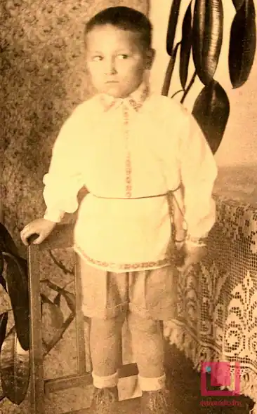

Буравкін ГЕННАДІЙ МИКОЛАЙОВИЧ
Народився 28 серпня 1936 року в селі Шулятіно Россонського району Вітебської області Білоруської РСР в сім'ї службовця.
Білоруський письменник, сценарист, суспільно-політичний діяч. У 1959 році закінчив відділення журналістики філологічного факультету Білоруського державного університету. Працював в редакції журналу "Комуніст Білорусії", редактором на Білоруському радіо, завідувачем відділом літератури, заступником головного редактора газети "Літаратура І Мастацтва". У 1968-1972 роках — кореспондент газети "Правда" в Українській РСР, в 1972-1978 — головний редактор літературного журналу "Маладосць". У 1976 році в складі делегації Білоруської РСР брав участь в роботі 31-ї сесії Генеральної Асамблеї Організації Об'єднаних Націй. З 1978 року — голова Державного комітету Білоруської РСР по телебаченню і радіомовленню. З 1990 року — постійний представник Білоруської РСР (з 1991 року — Республіки Білорусь) в ООН. Обирався депутатом Верховної Ради Української РСР (1980-1990). Був членом Білоруського ПЕН-центру (1989) та Спілки білоруських письменників. У 1994-1995 роках — заступник міністра культури і друку Республіки Білорусь. У 1995-2001 роках працював в журналі "вожик". У 1997-1999 роках — голова Товариства білоруської мови імені Франциска Скорини. Член Спілки письменників СРСР (1961). Пішов з життя 30 травня 2014 року.